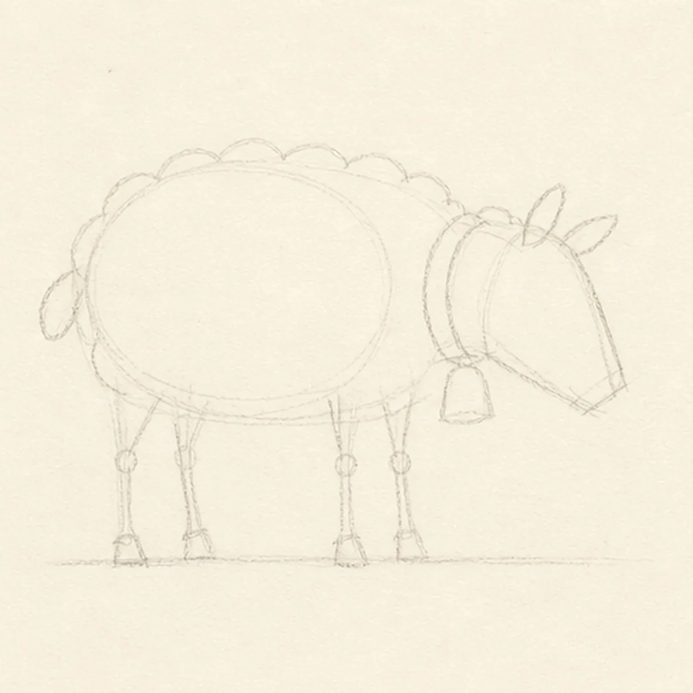
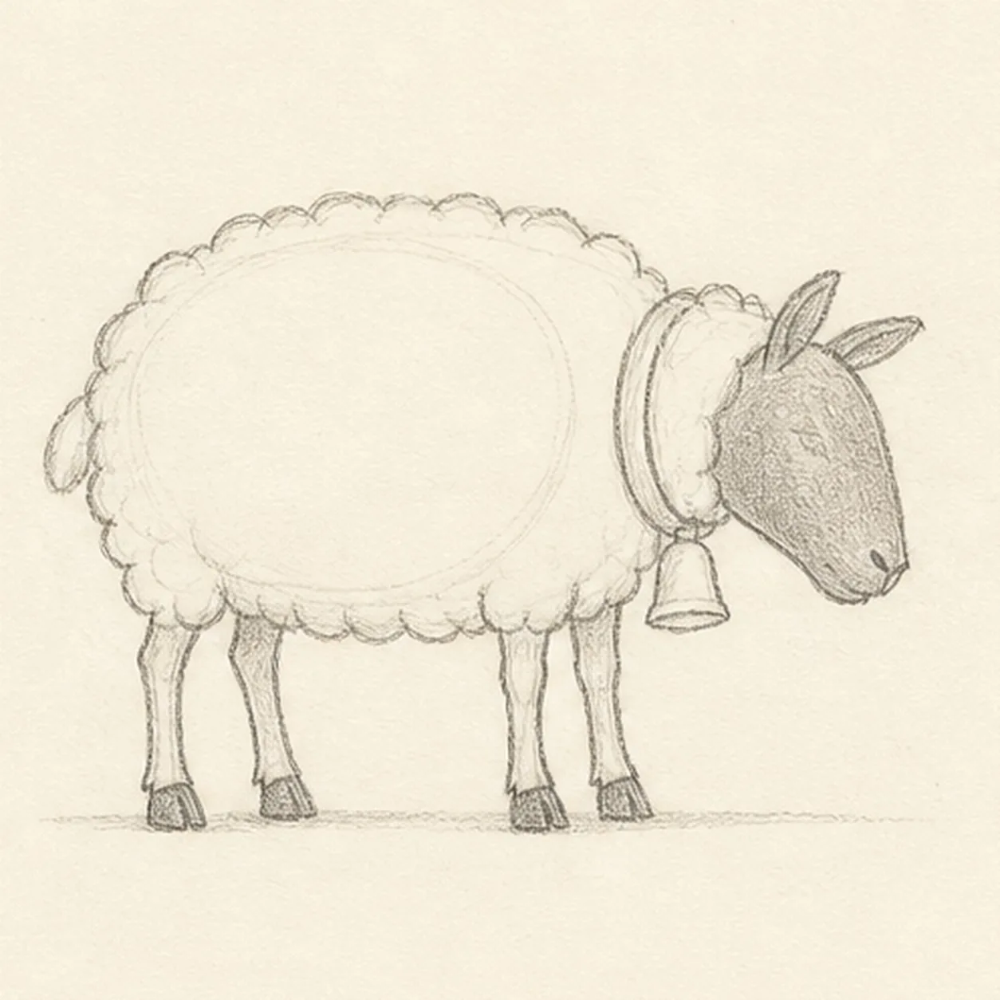
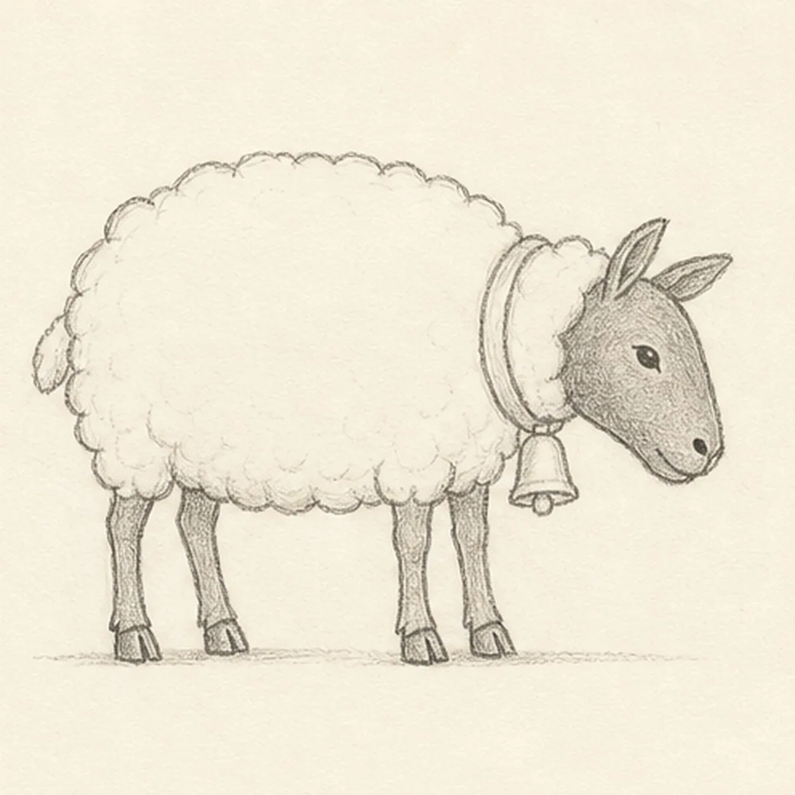
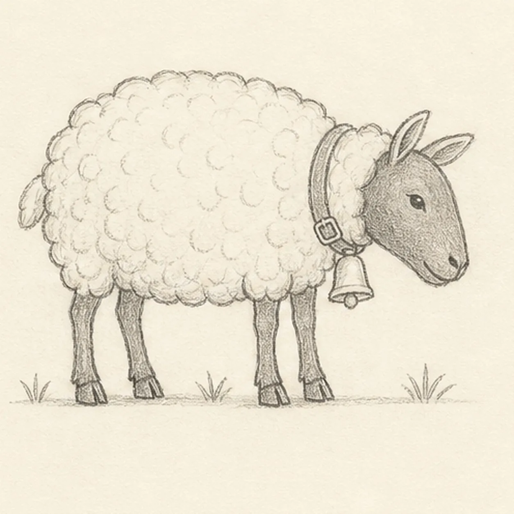
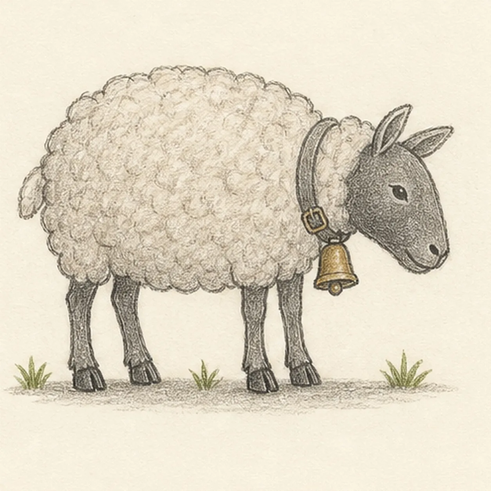

From the archive
Let's draw a woolly sheep with a bell
Treat this as one small practice round: build the subject lightly, notice the shapes, then darken only the lines that help the finished sketch.
-
01

Place the sheep's woolly frame
Draw a pale body oval and scalloped fleece envelope, add a smaller lowered head wedge, then place two ear routes, exactly four leg axes, the tail, collar line, bell footprint, and a short ground line.
Sketch tip: Ghost the body oval twice before touching down, then compare the empty spaces between the four leg axes. Uneven gaps will make the stance feel natural; merged axes will make a leg disappear later.
-
02

Shape the sheep silhouette
Wrap the guides with the woolly body, dark face, two ears, exactly four separated legs and hooves, one small tail, the collar, and one bell.
Sketch tip: Rotate the page for the long face edge and each leg. Keep the fleece edge in a few large scallops rather than a chain of identical little bumps, and break hidden neck lines beneath the collar.
-
03

Set the face and hooves
Add one calm eye, the nostril, short mouth line, four hoof splits, and the bell clapper, then clarify the established leg overlaps.
Sketch tip: Squint at the legs and count four dark vertical rhythms before adding hoof splits. Use one firm mark for the eye and nostril so the face stays quiet instead of scratchy.
-
04

Build the fleece rhythm
Group loose curls across the established fleece, add inner-ear folds, one collar buckle, and exactly three small grass tufts around the ground line.
Sketch tip: Draw the wool in overlapping clusters that change size and direction. Leave open paper between clusters; filling every gap with a curl will flatten the body.
-
05

Add soft value and color
Shade the existing face and legs with graphite, add warm-gray value to the fleece, muted brass to the bell, dusty green to the grass, and one broken cast shadow.
Sketch tip: Use lighter pressure over the wool than the face and legs. Pull the colored pencil with each form, then lift it before the paper loses its grain.
-
06

Soften the woolly finish
Strengthen the keeper contours and clarify the established fleece, face, two ears, four legs and hooves, tail, collar, bell, restrained color, paper highlights, grass, and broken shadow.
Sketch tip: Count four legs, two ears, one tail, and one bell, then stop while the fleece still breathes. Your wool rhythm and colors can change while keeping the same simple construction.
![Handmade graphite and restrained colored-pencil sketch of one left-facing three-quarter vintage microscope with a long muted-brass optical barrel and eyepiece, a revolving nosepiece with exactly two objective lenses, one blue-gray rectangular stage with two curved clips, one large ribbed brass focus knob, a dark curved support arm, one round tilting blue-gray mirror, an upright hinge support, a broad charcoal-green horseshoe base, small screws and bands, paper highlights, and one broken graphite cast shadow](../assets/vintage-microscope-finished-v1.webp)